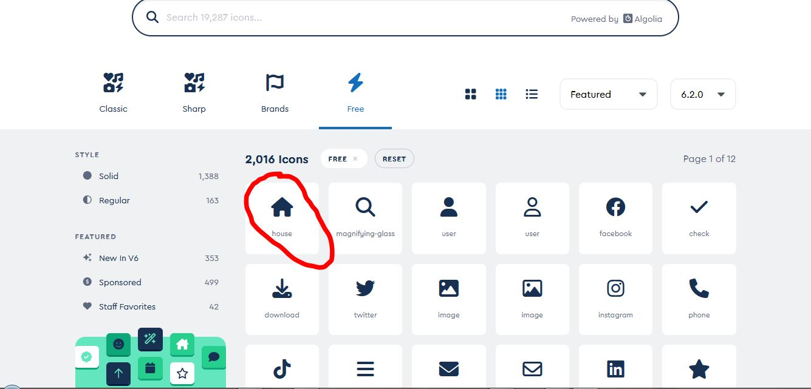

@import used to import any css while within another css file.
Youtube Video Link....
There are 3 different way to give @import rule:
- @import "css_file_name.css";
- @import url("file_location/css_file_name.css");
- @import "css_file_name.css" print.
In 3rd way we can also give media type.
There are 4 types of media:
- all
- print
- screen
- speech
icon font:icon font are the icons in font format. There are similar to fonts.
Youtube Video Link....
Following are the steps to use icon fonts:
1. search for icon font. Go to any website. Here we use icon font from "font awesome" website. And download the zip file by following the given procedure.

2. extract the downloaded zip file.
3. Open the extracted zip file and find all.css or allmin.css file in css folder and link it to your html page.
here there is different catogories of icon font file is also available such as solid, regular etc we can also link them but all.css contain all the catogories in one file.
4. find the webfont folder in the extracted zip file and place it in the same folder where our html page is located. It can also placed anywhere but we have to edit its location in all.css file.

If webfont folder is located at another place. Then open the all.css file and go at the bottom of the page and edit its location shown below.
5. Now go to the website and select the icon you want to use and click on it.

6. Now copy the css code as shown below and paste it where you want to use in html page.
Here we add home icon font and instagram icon font by using above procedure. The resulted icon fonts are:
We can also use icon font direct online from website.
Scrollbar Styling: They are pseudo elements which are used for styling of the scrollbar.
Youtube Video Link....
These pseudo elements are not supported on browsers so we use prefix for use them.
There are 4 pseudo elements that are used to styling the scrollbar.
- ::scrollbar
it is used to define the width of the scrollbar and on which scrollbar-track lie.
- ::scrollbar-thumb
It is used for styling the bar that we move.
- ::scrollbar-track
It is used for styling the track on which the bar move.
- ::scrollbar-corner
It is used to fill the background color for the space left b/w the vertical and horizontal scrollbar.
for example, we design the body scrollbar on right side of these page.
The syntax we use for designing it is:
body::-webkit-scrollbar
{
width:28px;
background-color: #e30f75;
}
body::-webkit-scrollbar-track
{
border-radius: 10px;
background-color:darkslategray;
}
body::-webkit-scrollbar-thumb
{
border-radius: 10px;
background:radial-gradient(#163d8f,#47afe5,#790487);
}
display:flow-root; It is used when we have two div, one is child of another and child div has applied the float property then the bottom and top border of the parent div collapsed to avoid this we use "display:flow-root".
It is used in parent div.
Without the display:flow-root;
using the display:flow-root;